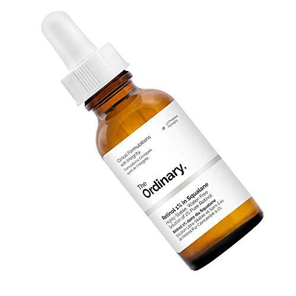

Retinol 1% in Squalane
This water-free solution contains 1% pure Retinol, an ingredient that can reduce the appearances of fine lines, of photo damage and of general skin aging. While Retinol has been studied extensively, it is irritating to the skin and newer technologies exist that mimic the visible effects of Retinol without causing skin irritation. For this reason, we generally recommend using Granactive Retinoid 2% or Granactive Retinoid 5% instead of this formula.
This highly stable, water-free, high strength age-defying solution features 1% pure retinol. This special form of vitamin A has been proven to minimise fine lines, improve pigment problems, revitalise skin and make its overall appearance fresher and more youthful. As retinol can cause irritation, The Ordinary recommends beginning your regimen with lower concentrations to allow skin to build up tolerance.
ONLY IDR 290K, while stock last ♡
Retinol 1% in Squalane
